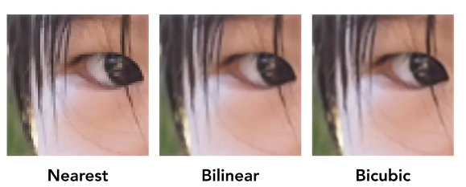
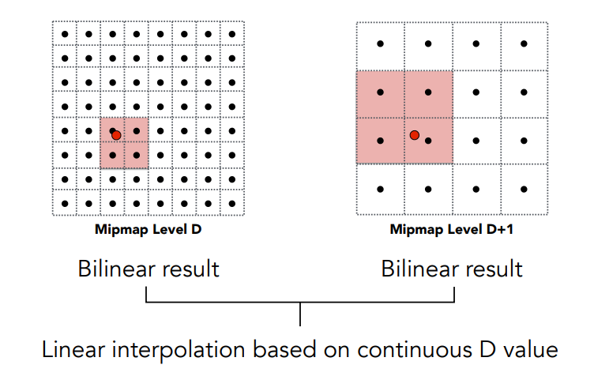
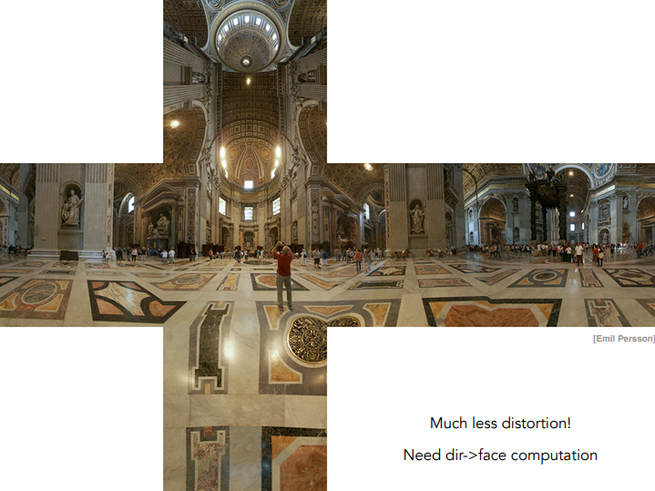
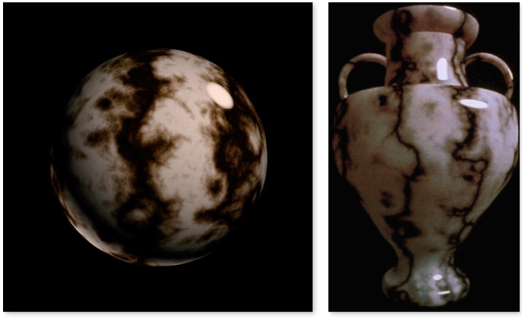

GAMES101课程笔记（三）——Shading
引言
最近事情好多啊，笔记好久没有更新过了。
在上次的笔记中，我们学会了光栅化的过程，也就是如何使用像素绘制出我们想要的图像。
但光有这些是不够的，为了呈现更加真实的效果，我们还需要进行着色，在图形学中，着色本质是指将材质应用到物体上。
本文会涉及到光在图形学中的建模，各种着色法以及和纹理相关的各种内容，也是笔者认为非常有趣的一节。
前文指路：
GAMES101课程笔记（一）——Transformation
GAMES101课程笔记（二）——Rasterization
基础光照概念
在这里我们先介绍一下该部分的一些基础概念。
上图展示了一个简单的光照场景，我们可以看到几个叠放在一起的杯子，而杯子上呈现出了几种不同的光照表现。
首先是光线通过光滑表面直接反射进入人眼的部分，会呈现出镜面高光（Specular highlights）的效果；与之相对应的是漫反射（Diffuse reflection），这部分由于是通过无规则反射进入到人眼的光线，远不及直接反射的光照强度，所以会呈现出较弱的光亮效果；另外还有一种光，单从光源角度来说，图中所指的这部分没被照射到，理应呈现出黑色，但事实上，光线会通过在其他表面（例如墙壁）的反射 ，照射到这一部分，这种光就称之为环境光照（Ambient lighting）。
那只要我们能够表达出这三种光照表现，就可以做出一种材质。不过在具体阐释之前，我们需要进行一些定义。
首先对于一个简单的光线反射模型：
光线照射到表面的点我们称之着色点（Shading point），我们需要以下参数，来进行着色：
- 观测方向：$\vec{v}$
- 表面法向量：$\vec{n}$
- 光照方向：$\vec{l}$
- 表面参数
（这里的向量都取单位向量）
在现在这个阶段，我们只考虑着色而不考虑阴影，具体来说，就是不考虑光线被其他物体遮挡的情况。
Blinn-Phong光照模型
光的能量
我们现在需要思考一个问题，着色点上到底接收到了多少光？
当我们探讨“多少光”时，其实是在讨论光的能量，因此我们先来说说如何研究这个问题。
能量与入射方向
首先一个区域能接收到的能量与入射方向是有关系的，下图用一种比较直观的方式分析了这一点，：
我们假设在一个小平面上接收到了六条光线，此时如果我们将该平面转过60°，就将只能接收到三条光线。
从数学的角度上说，是因为旋转过60°后，该平面在水平方向上的投影变为原来的一半，因此我们可以将结论推广：
- 着色点接收到的能量与入射角$\theta$的余弦值成正比。
即：$I\propto \cos\theta=\vec{n}·\vec{l}$
能量与距离——光照衰减
假设有一个点光源，向所有方向放射光线，那我们可以把它放出的能量假想为一层球壳，这个球壳会随着时间的推移逐渐变大，对应能量向外传播过程，如下图所示。
由能量守恒定律，每一层球壳的能量理应是相同的，由于球表面积的计算公式为$4\pi r^2$，我们可以得出这样一个结论：
- 某一点接收到的能量，与它到光源距离的平方成反比
即：$I\propto \frac{1}{r^2}$
漫反射项
当一条光线照射到物体表面时，光线会被均匀反射到各个方向上去，这种现象就是漫反射。
基于前面有关光的能量的讨论，我们可以写出漫反射的表达式：
在课程ppt中给出了其中参数的详细解释：
$L_d$：表示漫反射向周围反射的光线
$k_d$：漫反射系数，表示着色点对能量的吸收能力，如果使用三维向量，就能表示颜色
- $\frac{I}{r^2}$：参考前文光照衰减
- $\max{(0,\vec{n}·\vec{l})}$：参考前文能量与入射方向的关系，这里$\max$的作用在于排除余弦值为负的情况（这种情况没有任何意义）
在这个公式中并没有出现$\vec{v}$，因为漫反射的反射光均匀散布，与观测方向无关。
我们在一个球体上运用上述公式，可以得到这样的结果：
这里的$k_d$取为标量，因此着色完的图像仅有明暗上的差异。
高光项
当光照射到一个比较光滑的平面时，大部分的光线会向镜面方向反射，此时如果我们从该方向进行观察，就能看到高光的出现，如下图所示：
在Blinn-Phong模型中，它做了一个巧妙的的转化，它引入了半程向量来计算高光项。
半程向量指的是$\vec{l}$和$\vec{v}$角平分线向量，其计算式为：
那么原始问题中的“从镜面方向进行观察”，就转换为了“半程向量$\vec{h}$与法向量$\vec{n}$接近”。
运用半程向量的目的是为了简化计算，否则就要使用镜面向量，计算会比较繁琐。
我们就可以给出高光项的表达式为：
下图是课程ppt中的详细解释：
- $L_s$：沿观测方向的高光光线
- $k_s$：镜面反射系数，表示着色点对能量的吸收能力
- $\frac{I}{r^2}$：参考前文光照衰减
- $\max{(0,\vec{n}·\vec{h})}^p$：这里不是光照衰减项！！！，这里是观测方向与镜面方向的重合程度
Blinn-Phong模型中的高光项并没有光照衰减项，它只关心有没有高光。
（Phong模型用的就是镜面向量）
指数$p$的引入是为了降低对高光的容忍度。
参考下图，我们会发现用余弦函数衡量重合程度存在问题，例如我们的半程向量与法向量偏差达到45°时，其余弦值仍旧较大，但实际上此时高光应该已经几乎不存在了。
为此我们引入指数$p$，加快其衰减，让高光只集中在偏差角度很小的那一部分。
我们同样在球体上应用上述公式，得到如下的结果：
可以看到随$p$的增大，高光区域逐渐减小。
环境光项
之前提到过，一些不会被光源直射的部分，仍会因周围物体的反射而被照亮，这种光照我们称之为环境光。
在这里，我们认为环境光是一个常量，附加在场景中所有的物体之上，也就说这里的环境光是一种假想光。
也因此，环境光项的公式非常简单：
下图是课程ppt中的解释：
- $L_a$：物体反射的环境光
- $k_a$：环境光系数，表示着色点对环境光的吸收能力
- $I_a$：环境光常数，表示附加的环境光
完整模型
当我们将上述三项累加起来，就获得了一个完整的Blinn-Phong模型，下图给出了一个示例：
着色频率
观察下面这三个模型，它们有什么区别呢？
从左至右，我们发现它似乎看上去更“光滑了”，但其实它们是三个完全相同的模型，着色频率的不同导致了渲染结果的不同。
之前我们的Blinn-Phong模型公式应用于着色点上，那么自然而然就会引出这样一个问题：我们要对多少点应用该公式？而这就是着色频率的问题。
上图左的圆球在每个小平面上对整个面应用了着色，也就是说同一个面上的颜色都是相同的；图中的球对于更多的顶点着色，然后使用插值计算剩余的部分，因此看上去更加细腻 ；图右对每个像素都进行着色，自然最为真实。
显然，着色点越多，效果越逼真，但效率会更低。
以下介绍两种常用的着色方式。
Flat shading
Flat shading，即平面着色，只对每个三角面进行一次着色（依据其法向量），因此在同一个三角面上的颜色都是一致的，如下图所示：
这种方法比较节省运算资源，但不是很适合应用在光滑表面上。
Gouraud shading
Gouraud shading是依据顶点来进行着色的方法，它对于每个三角面的顶点进行着色，区域部分使用插值的方法来进行计算，如下图所示：

这种方法要求每个顶点都要有一个法向量（后续会提及）。
Phong shading
Phong shading是另一种着色法，在获得所有顶点的法向量后，它先为平面上所有的点插值计算法向量，再为每个像素进行着色，如下图所示：
需要注意的是，虽然它的名字中含有Phong，但这不代表它使用的一定是Blinn-Phong模型。
着色频率的选择
着色频率的选择需要考虑多方面的因素，下图展示了一个选择场景：
上图中同一行所用的模型都是相同的，不过越是靠下的模型面数会越多。
我们可以看到，在模型面数比较少的时候，我们可以选择逐像素的着色频率，这能让图像呈现不错的效果。
而在模型面数增多后，平面着色法与逐像素的表现非常接近，那此时我们自然会去考虑开销更小的平面着色法。
顶点法线
之前我们已经提到过了好几次顶点法线（顶点法向量），这里我们谈谈它是如何获得的。
假设我们的顶点都在一个球体上，如下图所示，那法向量就由球心指向该顶点。

但在现实中，大多数的顶点都满足不了这种理想情况，为此，我们使用取均值的方法来计算。
如上图，我们假设顶点$v$与四个平面相接，那我们就能用这四个平面的法向量求均值来计算其法向量，具体的公式为：
当然，还有一种方法是利用三角形的面积进行加权平均的计算，增大大面积三角元的影响。
逐像素法线
接下来我们对逐像素法线进行定义。
我们的问题是：如果我们已知顶点的法向量，我们该如何为顶点之间的每个像素确定法向量？
事实上，我们使用Barrycentric （重心坐标插值法）来进行计算，后续我们会详细介绍。
请牢记，这里计算的所有法向量，最后都应化为单位向量。
实时渲染管线
至此，我们其实已经有了一套完整的绘制图像的管线，如下图所示：
注意的是在整个过程中，我们是先定义顶点，再定义哪三个顶点构成一个三角面，通过这种方式来定义整个图形。
在管线的最初，我们先使用MVP变换将顶点变换到屏幕坐标：
在Triangle Processing这一步，我们定义完了三角面，然后为其进行采样（也就是光栅化）操作：
接着，我们使用深度测试判断哪些像素是可见的：
至于我们刚刚提到的着色步骤，它会在顶点和片元处理两个部分都发生：
考虑我们刚刚提到的几种着色频率，如果我们使用Gouraud shading，它自然在顶点处理处发生；如果使用Phong shading，那便会在片元处理处发生。
另外这里我们先提及一个概念——纹理映射，下图中的三角行使用了木板纹理，在管线中就需要计算片元与纹理的对应关系，这会在后续详细提及。
Shader
为了告诉计算机如何进行着色，我们可以编写Shader（着色器），Shader分为Vertex Shader（顶点着色器）和Fragment Shader（片元着色器），分别应用于顶点与片元。
需要注意的是，着色器会对所有对象使用其计算过程。
以顶点着色器为例，在编写顶点着色器的过程中，我们好像是在为某一个特定的顶点进行编程，但其实当我们应用该顶点着色器时，它会对所有的顶点生效。
这里提一嘴，片元着色器也叫作像素着色器，它对每个像素进行计算，得出其应显示的颜色。
GLSL是OpenGL用于编写着色器的语言，以下给出一段GLSL的片元着色器样例代码：
uniform sampler2D myTexture; // 纹理
uniform vec3 lightDir; // 光照方向
varying vec2 uv; // 纹理坐标
varying vec3 norm; // 像素法线
void diffuseShader()
{
vec3 kd;
kd = texture2d(myTexture,uv); // 纹理颜色
kd *= clamp(dot(-lightDir,norm), 0.0,1.0); // 光照模型
gl_FragColor = vec4(kd,1.0); // 输出颜色
}
uniform关键字指的是全局变量，这里是一个纹理和光照方向。
varying关键字是指该变量用作顶点着色器和片元着色器的传递数据，对于片元着色器来说，就是从顶点着色器传来的变量，这里包括纹理坐标和像素法线，这两个数据需要顶点着色器来计算。
（这里不用在意纹理坐标是什么）
然后通过diffuseShader方法中计算过程，就能获得所有像素的颜色。
Texture Mapping——纹理映射
之前我们提到过纹理映射的概念，这里我们来具体介绍它。
考虑下面这张图中的场景：
我们可以使用Blinn-Phong模型为场景中的小球计算光照，不过在小球上还有独特的图案，让小球的各个部分呈现出不同的颜色。
换言之，虽然整个小球共用同一个光照模型，但其不同部分的漫反射系数并不相同，这就引申出了纹理映射要解决的问题：如何定义物体不同位置上的属性？
纹理
用通俗的话来说，纹理就是物体上的花纹。
我们可以用地球仪来举一个例子：
我们将三维的地球仪表面展开，就能获得一张二维的世界地图，这张世界地图就是纹理。
纹理坐标
同样考虑地球仪的场景，我们可以反过来思考这一过程。
如果我们又一张二维的世界地图，并将其包裹在一个球体上，就能获得一个地球仪，而这其实就是纹理映射的过程。
从更严谨的角度来分析，这一过程实际上是将球体表面的位置，与二维纹理的坐标，建立起对应关系，从而能够进行相应计算。
上图是一个纹理映射的典型场景，左上角我们是单纯使用光照模型渲染的结果，当我们想要为该模型附上纹理时，我们去考虑每个顶点对应的纹理坐标，再从纹理上获取该位置的属性，从而计算出每个像素的最终颜色。
在本课程中，我们默认对应关系是已知的，也就是对于每一个顶点，我们都知道其纹理坐标。
一般来说，我们都用$uv$来代表纹理坐标系，如下图所示：
为了方便处理，$u$和$v$的取值都在[0,1]区间中，这也是一个约定俗成的规则。
另外，并不是说对于一个物体，我们只能使用一次纹理，比如对于下面的场景，我们可以将一个纹理重复拼接多次。
现在用的纹理很容易看出拼接的边缘，不过我们可以设计一种上下与左右拼接起来后，能够“严丝合缝”的材质，例如下面这样：
这种纹理被称之为tile，只需一小块纹理的循环拼接，就能覆盖较大的物体。
在具体应用纹理时，我们可以将纹理上对应点的值赋给漫反射系数，从而达成目的。
重心坐标插值
插值运算的目的是为了获得平滑的过渡值。
在我们的问题中，只需要得到每个顶点的属性，就可以通过插值来计算三角面上的属性值。这些属性可以包括纹理坐标、颜色、法向量等等，故而插值有非常广泛的运用。
这里我们介绍一种插值法：重心坐标插值。
首先我们需要介绍三角形的重心定理，假设已知一个三角形的三个顶点——$A$、$B$和$C$的坐标，那么对于三角形平面上的任意一点$(x,y)$，我们可以将其表示为：
其中$\alpha$、$\beta$和$\gamma$满足：
下图说明的就是该定理：
如果我们限定点在三角形内，那么$\alpha$、$\beta$和$\gamma$还会是非负的。
$(\alpha,\beta,\gamma)$就被称为该点的重心坐标。
例如点$A$，其重心坐标就是$(1,0,0)$，上图中列出了具体的计算过程。
对于任意点，我们可以用面积来求得其重心坐标，公式参见下图：
我们将顶点与该点连线，将整个三角形分割为三个小三角形，其中与点$A$不相邻的三角形面积定义为$A_A$，并同样定义$A_B$与$A_C$，接着就可以使用该公式。
不过使用面积还是不太方便的，我们使用坐标形式的公式来计算：
对于三角形内任一点$(x,y)$，其重心坐标为：
这个公式的推导有多种方式，上面所说的面积就是一种思路，这里碍于篇幅不再展开。
现在我们将坐标值替换为我们要的属性值，就可以对任何属性进行插值，就像上图中所做的这样。
要注意的是，重心坐标插值在投影变换下无法保证重心不变，所以当我们插值高维空间的属性时，我们要先在三维空间中完成插值，再投影到二维平面。
纹理问题
如果我们只是单纯地用纹理坐标对应来进行纹理映射，那会出现一些问题。
Texture Magnification——纹理放大
问题解释
纹理也是由一个个小像素组成的，为了与屏幕像素区分，我们将其成为纹素。
当纹理过小时，会出现纹素过少的问题，这样会导致有些坐标没有对应的纹素

应对这种问题，最简单的做法是，每个像素使用其最靠近的纹素来进行绘制，这就是上图左的效果，但这么做会导致图像中有很多粗粒度的方块，也就是所谓的看上去“很模糊”。
为了使图像看上去更正常一点，也就是达到右边两张图的效果，我们有一些其他的做法，例如这里要介绍的。
Bilinear——双线性插值
假设有一个像素点的纹理坐标落在了图中红点处，我们该如何处理它呢？
上文中提到一种最简单的做法就是取其最近的纹素，也就是其右上角的那个点作为纹理。但为了避免模糊的出现，我们可以使用另一种做法——双线性插值。
对于一个像素点，我们可以取它临近的四个点，构成一个正方形，再计算出该像素点到左和下两条边的距离$s$与$t$。
由于我们认为两个纹素中心的距离为1，所以$s$和$t$都应是在$[0,1]$中的值。
在这里我们要使用线性插值公式：
我们先在水平方向进行一次插值，如下所示：
其中：
再在竖直方向进行一次插值：
$f(x,y)$就是我们最终要使用的颜色。
正因为使用了两次插值，该方法被称为双线性插值。
Texture Minification——纹理缩小
问题解释
当纹理过大时，也会出现很多问题。
当我们将一个很大的纹理应用到模型上时，可能会出现下图中展示的问题：远处的直线变成了混乱的纹路，近处的直线出现了严重的锯齿。
在光栅化的笔记，有关走样的部分中，我们曾探讨过这两种问题。那在材质映射这里，这两个问题是如何产生的呢？
原因在于，对于远近不同的物体，一个像素所代表的实际大小不同。对于距离较近的部分，一个像素覆盖的区域可能远小于一个纹素的区域，反之，对于远处的部分，一个像素就可能覆盖很多个纹素，下图就说明了这一过程。
在之前的笔记中提到过，使用超采样技术可以解决这些问题，下图就是使用了超采样的结果：
虽然行之有效，但在这里使用超采样技术的开销太大了，因此我们需要找到其他方法。
Mipmap
我们知道，出现走样的根本原因在于采样率太低，超采样技术是从采样率的角度入手来思考，但现在我们使用一个新的思路——范围查询。
具体而言，就是要找到一个方法，能够立刻得知一片区域内纹素的平均值，这就是范围查询的概念。
（事实上区域查询所指的范围更为广泛，也可以是查询区域内最大值等问题。与之相对的还有点查询问题，就是获得某个点的具体值，我们之前介绍的双线性插值等方法都属于这一范畴）
为此，我们使用Mipmap技术，它可以进行快速、近似、方形的范围查询。
Mipmap为一张纹理生成不同大小的各种版本，如下图所示：
在Mipmap中，我们用Level来表示各种尺寸的纹理，Level 0通常表示原始纹理，Level每高一级，纹理的尺寸就会缩小一倍（面积缩小为1/4）。
如果把各个Level的纹理叠加起来，就会像下图一样呈现出类似金字塔的形状：
由无穷等比数列的求和公式，我们知道：
所以当我们对一张纹理使用Mipmap时，生成的额外存储空间不会超过原纹理的1/3，不会造成太大的存储负担。
现在我们来介绍Mipmap的工作原理，即如何计算要使用哪个Level的纹理。
假设在屏幕坐标系下有一个像素（图左，左下角红点所在的像素），现在要求它对应的Mipmap层级。
这里为了更好的理解，部分变量的含义与视频中不同。
我们可以取该像素中心点，以及周围的几个像素中心点，把它们一起映射到纹理空间中，如下图右所示：
我们知道在屏幕空间中，相邻像素中心点的距离为与每个像素的边长是一样的，因此在纹理空间中，我们也使用两个点之间的距离$L$来近似像素边长。
下图中表示红色像素在纹理空间下实际覆盖的区域，下图右表示我们用距离来近似的区域，可以看见它们大体上是一致的。
假设横向两点在屏幕坐标下的横向距离为$dx$（纵向距离为0），在纹理坐标中的的横向距离为$du$，纵向坐标为$dv$，缩放比例为R。
那我们有：
在示例中我们还取了纵向的点，因此我们可以分别计算横向与纵向的缩放比例，选取其中较大的那个：
由于Level每高一级，纹理的边长都缩小1/2，所以该像素对应的层级$D$为：
这里的$D$可能为非整数，我们取每个像素最靠近的Mipmap层级做一个可视化：
图中每种颜色代表一个Mipmap层级，其中红色表示较低的Mipmap层级，蓝色表示较高的Mipmap层级，可以看到较近的物体都使用了低层级，远处则使用了高层级。
但现在不同颜色之间的边缘过于生硬，这是因为我们的层级定义本就是离散的，例如从0级直接跳跃到1级，而没有0.5级的概念。
不过我们现在已经有解决这类问题的办法了，那就是之前屡屡提到的插值计算。对于计算出层级为非整数的情况，我们可以一并计算其上下两个层级，再进行一次线性插值，如下图所示：

这么做是在双线性插值上又做了一次插值，所以该方法被称为三线性插值。
在使用了插值后，Mipmap的过渡就会变得更加平滑：
Anisotropic Filtering——各向异性过滤
但Mipmap有一定的局限性，那就是只能查询方形区域的值，所以在某些场合下，使用Mipmap的效果也不尽人意。例如之前的场景，会出现过模糊的问题：
这是因为在这张图中，很多像素在纹理坐标下并不再是方形的，而是呈现长条状，如下图所示：
为了解决这一问题，我们可以使用一种更泛用的范围查询——各向异性过滤，相比Mipmap，这种方法会生成更多生成不同尺寸的纹理。

上图就是一个经典的各向异性过滤示例，其对角线上的纹理全是正方形，与Mipmap生成的各层级一致。除此此外，还有各种长宽比例的纹理，使用时根据纹理空间中的形状选用对应的纹理即可。
（当然其存储空间也相应变大，需要额外三倍于原纹理的空间）
原教程中还简要提到了EWA过滤，这里就不做详细展开了。
纹理应用
除了单纯地给模型赋上花纹，纹理还有很多其他的应用。
环境贴图——Environment Mapping
下图展示的例子是一个经典模型——犹他茶壶，左图的纹理上记录了周围的环境光照，当把这张纹理渲染到茶壶上后，就营造出了光线照射到茶壶表面，形成反射的效果。
一个简单的记录环境光的方法是使用球体，如下图所示：
具体而言，就是想象有一个镜面球体放在环境中央，这个球体上呈现出来的内容就能够看作是一个环境贴图，这种方法就是Spherical Environment Map。
这种方法有一个很大的问题，就是它的描述并不均匀。
上图是把一个球状纹理展开成矩形的例子，不难发现它出现了扭曲的现象，尤其是上下两个区域，对应到球体就是其两个极点区域。
这个问题的解决方法倒是很简单，就是把我们的球体换成一个立方体。
（说得更专业一点，就是用该球体的包围盒来代替）
像图中示意的一样，原本落在球面上的点回到了立方体的规则平面上，这样扭曲现象就会大大减少。

凹凸贴图——Bump Mapping
环境贴图的本质其实还是在进行上色，但纹理的作用不止于此。
纹理存储的每个纹素，其本质其实就是单纯的数字，只是我们此前一直将其用以表示颜色，换言之，我们可以用它来表示其他信息。
一个常用用途就是用它来表示物体表面的相对高度或者法向量，用以表示一些复杂的表面细节。
（平时我们用的法线贴图就是保存法向量）
上图中我们对一个球体使用左边的相对高度贴图。注意，是一个球体，其表面是光滑的曲面，但通过相对高度贴图，我们能让它看上去像是拥有了极粗糙的表面。
所以我们可以使用凹凸贴图，在不增加模型复杂度的情况下，模拟出一些逼真的细节。
凹凸贴图的具体做法是这样的，我们先从二维的情况进行理解：
图中的黑线表示我们的实际表面（如前例中球体中的光滑表面），黄线表示我们想要模拟的表面，存储在凹凸贴图中。
在实际计算前我们要先明确几个点：
- 模拟表面的存储是离散的，因为存储在纹素中
- 每个点的原始法向量为(0, 1)，因为相对高度的方向是沿着原表面的法向量方向
（对于第二点，可以假想把上图中的黑线拉成一条直线）
为求法向量，我们先求切线向量，但由于存储的是离散值，我们没法直接通过求导获得切线向量，因此使用差分法。
如上图所示，我们有：
其中$c$是一个常量，于是我们获得了其法向量应为：
而在真实的三维情况下，我们也是用类似的计算方法，只是计算差分时，要在两个方向上计算，即：
于是得到其法向量：
在计算具体的光照信息时，我们就可以引入每个点的模拟法向量，实现凹凸效果。
位移贴图——Displacement Mapping
位移贴图使用的贴图数据和凹凸贴图是一样的，区别在于其应用贴图的方式。
具体而言，就是位移贴图是重新排布了原模型的顶点，让其符合贴图中的高度数据。
下面这个例子展现出了两者的不同：
可以看到，使用凹凸贴图虽然可以模拟粗糙表面，但在边缘上会出现违和感，因为它并没有真的改变物体本身的形状，我们看到的仍然是一个规则圆形，这显然不符合其粗糙表面的特征。
此外，当模拟表面本身会引起一些阴影时，也会出现失真感，例如整个球体投下的阴影边缘非常光滑，表面处的阴影不够丰富等。
使用位移贴图可以解决上述缺点，如右图所示，模型形状变成了正常的样子，表面阴影也更为真实。
但使用位移贴图要求物体本身的顶点密度足够高，不然就没法对表面进行调节，这会变相增加三角片元的数量，从而增加运算负担。
其他应用
三维噪声
此前我们的纹理存储的都是物体表面的信息，但我们也可以表示空间中任意一点的纹理。

我们可以想象左图中的球是一个实心的球，然后将其雕琢为了右图中的壶，左边这个球其实就可以看作是一个三维纹理。
不过在实际应用中，不会真的存储这个球体中每一点的信息，而是通过噪声函数方式来进行计算。
预渲染
对于一些复杂的细节，实时渲染的效率会比较低，例如下图中人性的各种皱纹。
此时我们可以提前将这些部分渲染好，然后将渲染结果保存在一张贴图中，这样在进行实时渲染时，就可以省略掉复杂的计算步骤。
三维纹理与体渲染
三维噪声中我们提到过三维纹理，它存储空间中每一点的纹理信息。
比如医学上，使用核磁共振扫描人体时，我们可以将检测结果（例如密度）存储起来，这个存储结果就可以看作是一个三维纹理，我们也可以通过该纹理，重建出我们要的模型。
总之到这里，纹理这一概念就不再是单纯的存储颜色了，它可以存储各种能用数表示的信息。
那么Shading部分，完美结束！